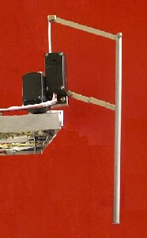

Construction
Structure
Nous voulions réaliser un robot totalement autonome (énergie et commande) se déplaçant sur 6 pattes.
Il devait pouvoir marcher en ligne droite mais être suffisamment flexible pour, en changeant de programme
, être capable de tourner, monter, éviter des obstacles ...
Pour cela les 6 pattes devaient être indépendantes.
Pattes

Deux systèmes de patte étaient possibles : soit une patte en une seule partie, commandée par un
seul servomoteur, et qui ne se soulève pas, soit une patte en parallélogramme.
La deuxième possibilité nous parut meilleure car elle avait l'avantage d'avoir deux degrés de
liberté permettant des mouvements plus complexes.
Partie opérative
Alimentation en énergie :
Batteries rechargeables de 7,5 volts embarquées.
Actionneurs :
Servomoteurs : asservis en position, compacts et faciles à commander
par un signal rectangulaire à rapport cyclique variable.
Partie commande

On choisit des microcontrôleur